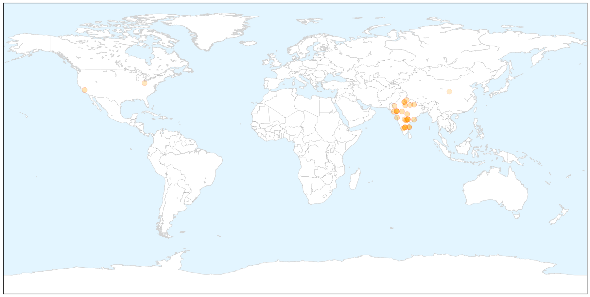
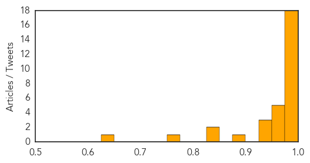
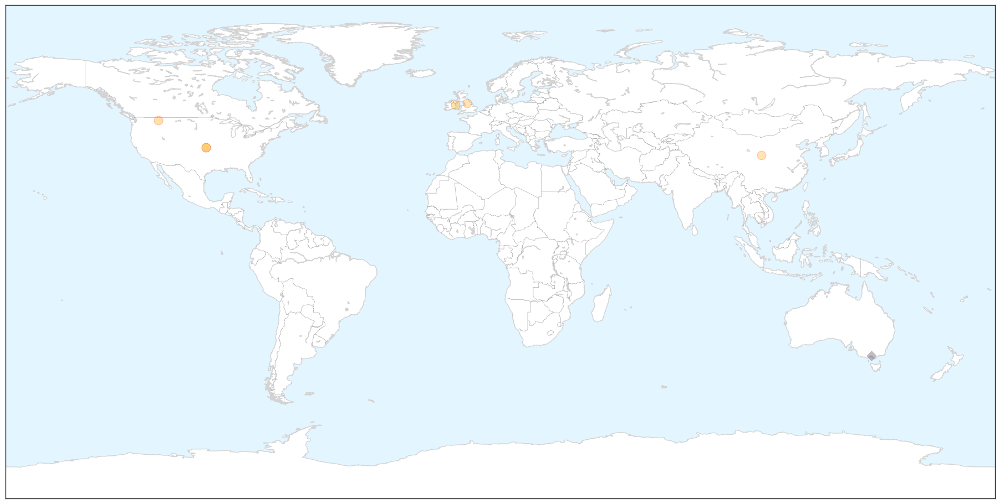

Swine Flu
30-Day Web Trend
16 alerts, 5 warnings

30-Day Twitter Trend
0 alerts, 0 warnings

Article Locations

X

Article Confidences
Top Articles:
- 1.000
- 42 swine flu cases in Mumbai so far, death toll at 5
- 0.999
- Hospitals on Alert After Recording 95 Cases of H1N1
- 0.999
- Swine flu epidemic hits Gujarat with 831 cases in just 40 days
- 0.999
- Seven new Swine flu deaths, toll 88
- 0.998
- Swine flu claims more lives in state
- 0.998
- No swine flu vaccine for NMC workers, GMCH staff
- 0.997
- the edge of knowledge
- 0.997
- Five More Succumb to Swine Flu in Gujrat; Death Toll Reaches 71
- 0.995
- Educational institutes in Bhopal issued H1N1 guidelines
- 0.994
- First Swine Flu Case in Himachal, 59-Year Woman Tests Positive
- 0.994
- Swine flu scare: 831 cases, 88 deaths in Gujarat
- 0.994
- One more case of swine flu detected in Thane
- 0.993
- Swine Flu Claims 42 Lives in Telangana Since Jan 1
- 0.992
- Swine flu death toll reaches 92 in Rajasthan
- 0.991
- Maharashtra on alert after spurt in H1N1 cases
- 0.991
- Eight more H1N1 deaths in Bhopal and Indore in last two days
- 0.977
- A(H1N1): Health Department’s directive to private hospitals
- 0.976
- Swine Flu deaths despite availability of vaccine- Business News
- 0.975
- Swine Flu Kills 9 in Karnataka; 50 New Cases Reported in Bengaluru
- 0.973
- Ruia Hospital nurse diagnosed with swine flu-like symptoms
- 0.970
- 7 more suspected swine flu cases in Agra
- 0.959
- Going viral, literally
- 0.957
- Khader Calls Meeting as H1N1 Deaths Touch 5
- 0.950
- Swine Flu Cases Surge to 40 in Lucknow
- 0.936
- Eight Swine Flu Deaths Out of 118 Cases in State So Far, Govt on Alert
- 0.935
- Swine flu toll climbs to 53 in Telangana
- 0.883
- Confidence in government may play key role in public's willingness to take swine flu vaccine
- 0.838
- Swine flu toll crosses 100 in Rajasthan
- 0.834
- Kids turned away from school on swine flue scare
- 0.753
- Confidence in government may play key role in public's willingness to take swine flu vaccine
- 0.638
- Plan for Hong Kong's own vaccine plant deserves full support
Top Tweets:
-
No tweets found for Feb 09, 2015
Influenza
30-Day Web Trend
0 alerts, 0 warnings

30-Day Twitter Trend
1 alerts, 0 warnings

Article Locations

X

Article Confidences

Top Articles:
- 0.997
- Influenza has claimed 10 lives in Montana
- 0.996
- Hospitals cut visits in bid to curb flu virus
- 0.994
- Hong Kong battles nasty strain of Influenza that’s killed 140 so far
- 0.991
- Flu Season 2015: Influenza-Related Illnesses Tied To Surge In Hospital Admissions For UK Kids
- 0.886
- New flu jabs to be studied
- 0.836
- H5N1 bird flu strikes Canadian flock
Top Tweets:
- 0.747
- RT: Hong Kong health minister warns that more deadly virus could emerge from bird flu and seasonal influenza http://t.co/r…